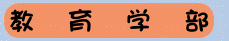
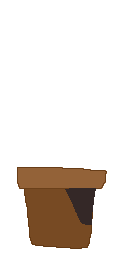
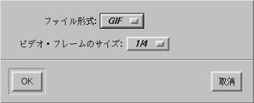

|
→ | ||
 |
 |
||
 | |||
表は、マス目の内容を <td> ～ </td> または <th> ～ </th> ではさみ、それらの１行分を <tr> ～ </tr> ではさんで、全体を <table> ～ </table> ではさんで作ります。
<th> ～ </th> は表の見出し欄に使います。
３行４列の表（うち１行と１列は見出し）を書くには、 次のように記述します。
<table> <tr> <th></th> <th>第１列</th> <th>第２列</th> <th>第３列</th> </tr> <tr> <th>第１行</th> <td>第１行第１列</td> <td>第１行第２列</td> <td>第１行第３列</td> </tr> <tr> <th>第２行</th> <td>第２行第１列</td> <td>第２行第２列</td> <td>第２行第３列</td> </tr> </table> |
これは下のような表になります。
| 第１列 | 第２列 | 第３列 | |
|---|---|---|---|
| 第１行 | 第１行第１列 | 第１行第２列 | 第１行第３列 |
| 第２行 | 第２行第１列 | 第２行第２列 | 第２行第３列 |
マス目の間に罫線を引くには、 <table border> ～ </table> とします。
| 第１列 | 第２列 | 第３列 | |
|---|---|---|---|
| 第１行 | 第１行第１列 | 第１行第２列 | 第１行第３列 |
| 第２行 | 第２行第１列 | 第２行第２列 | 第２行第３列 |
- 表全体の幅と高さ
- 表全体の幅や高さは、<table> タグにそれぞれ width=、height= オプションを付けて指定します。 数値（ピクセル数）で指定した場合は固定幅になります。 % をつけると Web ブラウザのウィンドウのサイズからの割合になります。
<table width="512" height="100%"> ～ </table> - 表の外枠の太さ
- 表の外枠の太さは、<table> タグに border= オプションをつけて指定します。
<table border="10"> ～ </table> - 罫線の太さ
- 罫線の太さは、<table> タグに cellspacing= オプションをつけて指定します。
<table border cellspacing="10"> ～ </table> - 罫線とデータとの間隔
- 罫線とマス目内のデータとの間隔は、<table> タグに cellpadding= オプションをつけて指定します。
<table border cellpadding="10"> ～ </table> - マス目の幅と高さ
- マス目の幅や高さは、<td> または <th> タグにそれぞれ width=、height= オプションを付けて指定します。 数値（ピクセル数）で指定した場合は固定幅になります。 % をつけると Web ブラウザの表全体のサイズからの割合になります。
<td width="20%" height="30"> ～ </td> - マス目の背景色
- マス目の背景色は、<td> または <th> タグに bgcolor= オプションを付けて指定します。
<td bgcolor="#ff0000"> ここは赤色のマス目 </td> - マス目内のデータの水平位置
- データをマス目のどの部分のそろえるかは、 <td> または <th> タグに align= オプションを付けて指定します。 align= には "left", "center", "right" が指定できます。
<td align="center"> ここは中央揃え </td> - マス目内のデータの垂直位置
- データをマス目のどの高さに表示するかは、 <td> または <th> タグに valign= オプションを付けて指定します。 valign= には "bottom", "middle", "top" が指定できます。
<td valign="top"> ここはマス目の上端 </td> - 複数行にわたるマス目
- 複数行にわたるマス目を作るには、 <td> または <th> タグに rowspan= オプションを使用します。
<td rowspan="2"> ここは２行にわたるマス目 </td> - 複数列にわたるマス目
- 複数列にわたるマス目を作るには、 <td> または <th> タグに colspan= オプションを使用します。
<td colspan="2"> ここは２列にわたるマス目 </td> - 表のキャプション
- 表のキャプションは、 <caption> ～ </caption> タグを使ってつけます。 キャプションの位置は align= オプションで指定します。
<table width="512" height="100%">
<caption>表のキャプション（説明）</caption>
...
</table><table width="512" height="100%">
<caption align="bottom">このキャプションは表の下</caption>
...
</table>
ホットスポットとして画像を使用したとき、 通常では画像全体で一つの URL にリンクします。 これを、画像上のクリックした位置によって、 異なる URL にリンクできるようにしたものを、 クリッカブルマップと呼びます。
クリッカブルマップの実現方法には、 サーバーサイドとクライアントサイドという２つの方法があります。 サーバーサイドは Web サーバ側でクリッカブルマップを実現する方法で、 以前から用いられていますが、実現方法にいくつかのバリエーションがあります。 和歌山のラーメンのページでは、この方法を採用しています。
クライアントサイドは Web ブラウザ側で実現する方法で、 古い Web ブラウザでは利用できません。
クライアントサイドでクリッカブルマップを実現する方法にも、 ２つの方法があります。 一つは、表を使う方法です。
下の左のような画像を、右のように要素ごとに分解します。 この作業は photoshop などでできます。
|
→ | ||
|
 |
||
| |||
これを、<table border="0" cellspacing="0" cellpadding="0"> で罫線の太さを 0 にして表としてレイアウトすれば、 １枚の画像のように見えます。
<table border="0" cellspacing="0" cellpadding="0"> <tr> <td colspan="2"><a href="http://www.wakayama-u.ac.jp/"> <img src="map1.gif" border="0"></a></td> </tr> <tr><td rowspan="3"><img src="map5.gif"></td> <td><a href="http://www.edu.wakayama-u.ac.jp/"> <img src="map2.gif" border="0"></a></td> </tr> <tr> <td><a href="http://www.eco.wakayama-u.ac.jp/"> <img src="map3.gif" border="0"></a></td> </tr> <tr> <td><a href="http://www.sys.wakayama-u.ac.jp/"> <img src="map4.gif" border="0"></a></td> </tr> </table> |
そして、この一つ一つの画像をホットスポットにすれば、 クリッカブルマップが出来上がります。 その際、<img src="..." border="0"> として、 画像をホットスポットにしたときに現れる枠を消しておきます。
|
|
|
|
|
この方法はかなり面倒なうえ、 分割した画像の隙間が埋まらないことがあるなど、 使いやすいとは言えません。 クライアントサイドでクリッカブルマップを作るもうひとつの方法は、 <map name="マップ名"> タグを使う方法です。
<map name="organization"> <area shape="rect" coords="32,140,221,171" href="http://www.sys.wakayama-u.ac.jp/"> <area shape="rect" coords="32,104,221,135" href="http://www.eco.wakayama-u.ac.jp/"> <area shape="rect" coords="32,68,221,99" href="http://www.edu.wakayama-u.ac.jp/"> <area shape="rect" coords="9,14,203,54" href="http://www.wakayama-u.ac.jp/"> </map> <img src="map.gif" usemap="#organization"> |
複数の GIF ファイルを一つにまとめて、 パラパラ漫画のような簡単なアニメーションを作ることができます。
 movie1.gif |
movie2.gif |
movie3.gif |
 movie4.gif |
|---|
上の４つの GIF ファイルを whirlgif コマンドで movie.gif というファイル名のアニメーション GIF ファイルにします。 上のような GIF ファイルは photoshop や gimp、xpaint などで作成できます。
% whirlgif -o movie.gif -loop movie1.gif movie[1-3].gif -time 100 movie4.gif[Enter] |

camera で撮影した画像（静止画）を使うこともできます。 第８回の「画像を埋め込む」のところでは、 静止画の画像フォーマットを JFIF にしましたが、 アニメーション GIF を作るためには GIF 形式の静止画像が必要になります。 そのためには、mediarecorder のメニューバーの“タスク”から “タスク設定を表示...”を選んで、 ファイル形式に GIF を設定してください。 また、“ビデオ・フレームのサイズは前回同様１／４にしておきましょう。

いくつかポーズをつくって画像ファイルを作成したあと、 whirlgif でアニメーション GIF ファイルに変換してください。
camera で作成したムービーファイルを、 そのまま Web ページに埋め込むこともできます。 ムービーファイルの作成は、 第３回の動画像のの取り込みを参照してください。 なお、このページにあるように、現時点では mediarecorder はスクラッチディレクトリを変更しないと動画像の取り込みができません。
この場合も、タスクは“Web 文書”にしておいてください。 それでもムービーファイルはサイズが非常に大きくなるので、 取り込み時間は数秒にしておいてください。
ムービーファイルの書式（フォーマット）は QuickTime になると思います。 QuickTime ムービーファイルの拡張子は ".mov" です。 このファイルを Web ページに埋め込むには、 <embed> タグを使います。
<embed src="movie.mov" width="160" height="120"> |
下の例は QuickTime ではなく、 MPEG-1 ムービーです。 絵をクリックしてみてください。
３次元 CG を Web ページに埋め込むことができます。 Web ページ用の 3D CG データファイルは、 VRML (Virtual Reality Modeling Language) という言語で記述されています。
VRML を構成する単位をノードと言います。 ノードは次のような書式をしています。
ノード名 {
フィールド名 値
フィールド名 値
‥‥
}
|
例えば、中心が原点で半径が２の赤色の球が１個だけ存在するシーンの VRML による記述は下のようになります。
#VRML V2.0 utf8
Shape { # 形状
appearance Appearance { # 属性
material Material { # 材質
diffuseColor 1 0 0 # 色
}
}
geometry Sphere { # 球
radius 2 # 半径
}
}
|
上の VRML の記述を sphere.wrl というファイル名で保存します。 VRML ファイルの拡張子には ".wrl" か ".vrml" を用います。
Web ページにこの３次元図形を埋め込むには、 <embed> タグを使います。
<embed src="sphere.wrl" width="512" height="384"> |
これは、下のように表示されます。
width= と height= は Web ページ上での図形表示部分の大きさです。 表示部分の下の方にはハンドルなどが現れます。 これを操作して、視点の位置などを変更することができます。 また、貼り付けた図形の上でマウスの右ボタンをクリックしたときに現れる ポップアップメニューで、表示方法や Viewer の変更ができます。 物体をくるくる回して見るには Examiner Viewer を使ってください。
物体の位置を指定するには、Transform ノードを使います。 上の図形の球のとなりに箱を追加するには、 箱の Shape ノードを Transform ノードの children フィールドに指定します。
#VRML V2.0 utf8
Shape {
appearance Appearance {
material Material {
diffuseColor 1 0 0
}
}
geometry Sphere {
radius 2
}
}
Transform {
translation 4 0 0
children Shape {
appearance Appearance {
material Material {
diffuseColor 1 1 0
}
}
geometry Box {
size 3 3 3
}
}
}
|
VRML では HTML 同様、図形をホットスポットにしてリンクを張ることができます。 球に和歌山大学のホームページをリンクさせるには、 球の Shape ノードを Anchor ノードの children の値にします。
#VRML V2.0 utf8
Anchor {
url http://www.wakayama-u.ac.jp/
children Shape {
appearance Appearance {
material Material {
diffuseColor 1 0 0
}
}
geometry Sphere {
radius 2
}
}
}
Transform {
translation 4 0 0
children Shape {
appearance Appearance {
material Material {
diffuseColor 1 1 0
}
}
geometry Box {
size 3 3 3
}
}
}
|
VRML は立体形状を表示するだけでなく、 マウスによる操作やアニメーションを取り扱うこともできます （例１：だんご（「次男」をクリック）、 例２：ロボット（関節の部分をドラッグ）、 例３：衛星、 例４：都市（柳原君制作、左下の楕円体の中の三角マークをクリック）。
VRML のデータをテキストエディタで作成することは、 実際にはあまりないと思います。 HTML は CosmoCreate のような HTML エディタで作成した方が楽なのと同じように、 VRML も、そのデータを作成するアプリケーションがあります。
VRML の仕様の一部をVRML の概要にまとめてあります（ごめんなさい、まだ途中）ので、 よかったら参考にしてください。ただ、これよりも about VRML97 の方がずっと良くできていますので、こちらを参考にした方がいいでしょう。 WWW 上には他にも多くの人が情報を提供しています。 これも Yahoo Japan の VRML のリンク集から探しはじめるといいでしょう。 安藤さんのページ にも豊富なリンクがあります。また、最新情報が知りたければ、大元の Web 3D Consortium のページをあたってみてください。 Windows や Macintosh 用の VRML ブラウザ CosmoPlayer は Cosmo Software 社のページ から入手できます。 ここには 日本の VRML のページ の一覧があります。
自分の Web ページを見てくれた人からメールをもらいたいときは、 自分のメールアドレスを Web ページに明記しておきましょう。 これは、メールをもらうだけでなく、 そのページの責任の所在（文責）を明らかにするという点でも、 意味のあることです。
<a href="mailto:メールアドレス"> ～ </a> というように、 ホットスポットのリンク先に Web ページの URL ではなく "mailto:自分のメールアドレス" を指定すると、 そのホットスポットをクリックしたときに Web ブラウザのメール機能を呼び出すようにできます。
<a href="mailto:tokoi@sys.wakayama-u.ac.jp"> <img src="mail.gif" align="middle" border="0"> <font size="+2">メール下さい</font></a> |
これは下のようになります。この絵か文字をクリックしてみてください。
 メール下さい
メール下さい
|
以下のいずれかのページをつくり、 自分の index.html からリンクせよ。